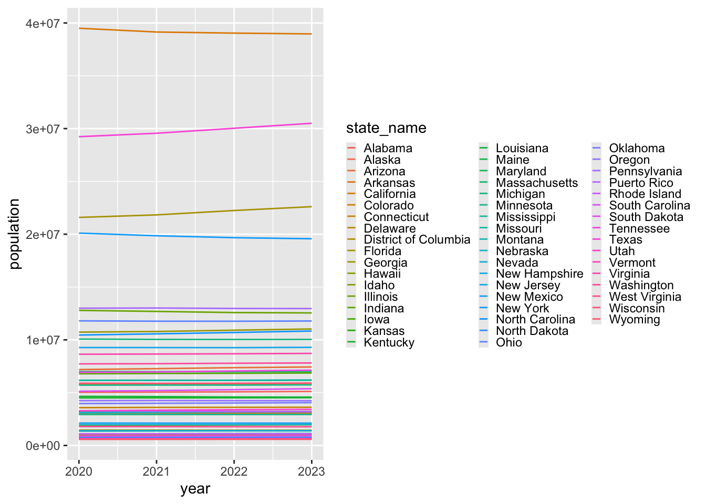
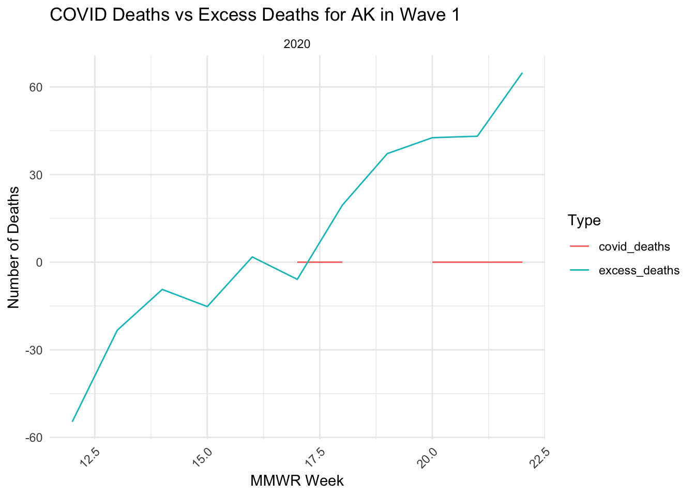

Analyzing the effects of the COVID-19 pandemic on the population in the United States
Abstract
The emergence of the COVID-19 pandemic resulted in a catastrophic increase in global mortality, and the rate of mortality can be influenced by factors, such as region, health policies and economic and medical resources. In this study, we aim to fully capture the profound impact that the pandemic had on mortality rates between 2020-2024 in the United States, including Puerto Rico and the District of Columbia. We seek to answer the following questions: 1) How did COVID-19 cases, deaths, and excess mortality vary across states and regions during the pandemic? Were there consistent patterns in state performance across different COVID “waves”? and 2) How closely did excess mortality align with COVID-19 deaths, and what does this alignment tell us about the broader impact of the pandemic? Data on state population and COVID-19 weekly cases, deaths, hospitalizations, vaccinations, and total deaths were obtained from the United States Census Bureau and the Centers for Disease Control and Prevention (CDC). We analyzed the periods between 2020-2024 to identify waves of COVID-19 cases and deaths, as well as excess mortality. Ultimately, the following four waves were identified as most prominent for COVID-19 cases and deaths: April to June 2020, October 2020 to March 2021, August to November 2021, and January to March 2022. After analyzing the trends of COVID-19 cases, deaths, and excess mortality during aforementioned periods, we found that COVID-19 contributed to excess mortality across the country.
Introduction
The COVID-19 pandemic has been one of the most profound global crises of the 21st century, reshaping societies, economies, and public health systems worldwide. Originating in late 2019, the virus quickly spread across international borders, resulting in millions of infections and deaths. The United States, with its diverse population and varying state-level health policies, became a focal point for understanding the dynamics of the pandemic. This analysis seeks to uncover patterns and insights into COVID-19’s impact, focusing on key metrics such as case rates, death rates, and excess mortality across different states and regions.
Understanding the temporal evolution of the pandemic is crucial. The pandemic’s waves, defined as periods of surging COVID-19 cases and corresponding deaths, provide a structured way to analyze its progression. Identifying these waves helps in assessing how different regions were affected and how public health responses evolved over time. By examining these waves, we aim to understand the correlation between rising cases and associated mortalities, revealing the interplay between infection rates, healthcare capacity, and policy interventions.
A significant focus of this analysis is excess mortality—deaths that occurred above the expected baseline during the pandemic. While COVID-19 deaths are directly attributable to the virus, excess mortality captures the broader impact, including deaths from overwhelmed healthcare systems, delayed medical treatments, or indirect consequences of societal disruptions. This measure allows us to gauge the true toll of the pandemic, offering a more comprehensive view than official COVID-19 death counts alone.
This study also delves into regional and state-level variations. States in the U.S. experienced the pandemic differently due to factors such as population density, socioeconomic conditions, healthcare infrastructure, and policy measures. By comparing states like Alaska, New Jersey, South Dakota, and Florida, we highlight the stark contrasts in outcomes. For instance, some states managed to maintain lower death rates through stringent measures, while others faced severe challenges during certain waves.
Our analysis is guided by the following research questions:
- How did COVID-19 cases, deaths, and excess mortality vary across states and regions during the pandemic? Were there consistent patterns in state performance across different COVID “waves”?
- How closely did excess mortality align with COVID-19 deaths, and what does this alignment tell us about the broader impact of the pandemic?
To address these questions, we adopted a data-driven approach, leveraging statistical models, data visualizations, and regional comparisons. The methodology involves breaking down the pandemic into four distinct waves based on peaks in cases and deaths: April to June 2020 (Wave 1), October 2020 to March 2021 (Wave 2), August to November 2021 (Wave 3), and January to March 2022 (Wave 4). For each wave, we analyzed state-level data to identify trends and outliers, comparing metrics such as case rates, death rates, and excess mortality. Statistical models were employed to estimate expected mortality based on pre-pandemic trends, enabling a comparison of observed and expected deaths during the pandemic.
By structuring the analysis around these waves and focusing on both direct and indirect mortality, this study provides a nuanced understanding of the pandemic’s impact across the U.S. Our findings aim to inform future public health strategies, highlight areas of success and failure, and contribute to the growing body of knowledge on pandemic response and resilience.
Methods
Data Collection and Wrangling
The dataset used to collect population data during the COVID-19 era came from the United States Census Bureau, which contained information about the average yearly population from 2020-2023 in all fifty states plus Puerto Rico and the District of Columbia (Bureau, n.d.b.). Data was wrangled to only include information about the yearly population for each state. Based on graph 1, since the population barely changes from 2020 to 2023, it is assumed that the population in 2024 will be similar. To get population data for 2024, the average population from 2020 to 2023 was calculated.
To collect information about the effect of COVID-19, data about weekly COVID cases, weekly COVID deaths, weekly hospitalizations, weekly COVID-19 vaccinations, and weekly total deaths for all fifty states, Puerto Rico, and the District of Columbia from 2020-2023 came from 4 separate json datasets from the CDC (COVID-19 Vaccination Trends, n.d.; Provisional COVID-19 Death Counts, n.d.; United States COVID-19 Hospitalization, n.d.; Weekly United States COVID-19, n.d.). For weekly COVID cases, data was wrangled to identify the date, state (i.e., all 50 states, Puerto Rico and District of Columbia), year, and epi-week of only a COVID-19 case occurrence (Weekly United States COVID-19, n.d.). For weekly COVID deaths and weekly total deaths, data was wrangled to identify the date, state (i.e., all 50 states, Puerto Rico and District of Columbia), year, and epi-week of only a COVID-19 death or a total death occurrence (Provisional COVID-19 Death Counts, n.d.). For weekly COVID-19 hospitalizations, data was wrangled to identify the date, state (i.e., all 50 states, Puerto Rico and District of Columbia), year, epi-week, and converted from daily to weekly hospitalizations after collapsing by week and only keeping data with observations for the whole week (United States COVID-19 Hospitalization, n.d.). For weekly COVID-19 vaccinations, after filtering for `Admin` information, data was wrangled to identify the date, state (i.e., all 50 states, Puerto Rico and District of Columbia), year, and epi-week for the total weekly series cumulative and booster shot given (COVID-19 Vaccination Trends, n.d.). If needed, state abbreviations were added to each dataframe using state information provided from class (Irizarry, 2024).
A dataset was created to combine population and COVID-19 data together from 2020 to 2024 by matching based on the date, state, year, and epi-week of occurrence. This created a master dataframe called dat where the population, COVID cases, COVID deaths, hospitalizations, vaccinations, and total deaths were all merged together.
To find excess deaths, information about population data for all fifty states, Puerto Rico, and the District of Columbia from 2010-2020 was also collected from the United States Census Bureau (Bureau, n.d.a.) while the information about total deaths per week from 2014-2019 in all fifty states, Puerto Rico, and the District of Columbia were gathered from the CDC (Weekly Counts of Deaths, n.d.). The census data from 2010 to 2020 was subsetted to 2014 to 2019 as the total deaths before the pandemic were only from 2014 to 2019. The data on total deaths before the pandemic would ideally be from a larger time frame (i.e., 2000 to 2019). However, the largest dataset found from the CDC was from 2014 to 2019. Therefore, the analysis sacrificed more data for more consistency as all information about total deaths came from the CDC. For census information, data was wrangled to only keep the population for each year for all 50 states, Puerto Rico, and the District of Columbia. For weekly total deaths information, data was wrangled to only keep the total deaths information for each state, date, epi-year, and epi-week. Afterwards, state abbreviations were added to each dataframe using state information provided from class (Irizarry, 2024).
Another dataset was created to combine population and total deaths together from 2014 to 2019 by matching based on the date, state, year, and epi-week of occurrence. This created a dataframe where the population and total deaths were all merged together.
Identifying COVID-19 Waves
The first step in the analysis was to identify distinct COVID-19 waves, defined as periods when COVID-19 cases and COVID-19 deaths displayed synchronized peaks, forming characteristic “hump” shapes in the data. This involved visualizing weekly trends of COVID-19 cases, hospitalizations, and deaths using time-series plots. These plots were generated using the ggplot2 library in R, which allowed for effective graphical representation. Specifically, facet plots were employed to facilitate side-by-side comparisons of cases, hospitalizations, and deaths across different states and regions, ensuring a clear visualization of the pandemic’s progression.
To normalize for population differences, the COVID-19 death rate (per 100,000 people) was calculated by dividing the number of COVID-19 deaths by the state population and multiplying by 100,000. Similarly, the virulence of COVID-19 was assessed by calculating the COVID-19 case rate (per 100,000 people) using the same normalization formula. This normalization ensured comparability across states with varying population sizes. The resulting visualizations provided a foundation for identifying four major COVID-19 waves during the study period, which subsequently informed the analysis of death rates, virulence, and excess mortality.
Evaluating Death Rates Across States and Waves
The second stage of the analysis focused on evaluating COVID-19 death rates for each state during the identified waves. The death rate, expressed as deaths per 100,000 people, served as a standardized metric for comparing state-level performance over time. This analysis aimed to categorize states as “good” or “poor” based on their performance. States with consistently low death rates were labeled as “good,” while those with high death rates during specific waves were deemed “poor.”
Statistical and graphical methods were applied to identify and analyze trends. Death rate trends were visualized using line plots with facet grids, enabling a detailed examination of individual states within each region. The lubridate library was used for date manipulation, ensuring accurate filtering of time periods corresponding to each wave. These visualizations highlighted state-level disparities in COVID-19 death rates, which were further examined to understand the variability in pandemic impact and response strategies.
Virulence of COVID-19
To assess the virulence of COVID-19, the case rate (cases per 100,000 people) was calculated for each state and wave. This metric captured the relative intensity of viral spread across different regions. Similar to the death rate analysis, states were categorized based on their case rate trends, with good states having consistently low case rates and poor states exhibiting higher rates.
The analysis utilized facet plots to compare case rates across states and regions, allowing for both individual and aggregate trends to be examined. This dual approach of analyzing case and death rates offered a comprehensive perspective on the pandemic’s impact, highlighting not only the severity of outcomes but also the intensity of viral spread.
Excess Mortality Analysis
The fourth stage of the analysis explored excess mortality, a critical measure of the pandemic’s broader impact on public health. Excess mortality was calculated as the difference between observed deaths and expected deaths during the pandemic (2020–2024). Expected deaths were estimated using pre-pandemic data on total deaths (2014–2019) and a linear regression model. The predictors included state, epidemiological week, and region, and the model was implemented using R’s base lm() function. This approach allowed for robust predictions of baseline mortality in the absence of the pandemic.
After calculating excess deaths, the data were visualized to assess alignment between excess deaths and COVID-19 deaths. Line plots were used to compare trends over time, enabling the identification of patterns and discrepancies between states. This analysis was instrumental in distinguishing the direct effects of COVID-19 from other factors contributing to increased mortality during the pandemic.
Excess Mortality Rates
The final component of the analysis focused on excess mortality rates, calculated as excess deaths per 100,000 people. This metric provided a standardized measure of the relative burden of excess mortality across states, allowing for direct comparisons independent of population size.
To examine temporal and spatial trends, excess mortality rates were visualized using time-series plots with facets by state and region. The combination of excess mortality and total mortality analysis offered a nuanced understanding of the pandemic’s impact, highlighting how effectively states managed the crisis. This analysis was facilitated by the tidyverse suite of libraries, which streamlined data wrangling and visualization.
Results
The results section presents a comprehensive overview of the key findings from the analysis of COVID-19 trends in the United States from 2020 to 2024. This includes the identification of four distinct pandemic waves, each characterized by varying levels of cases, hospitalizations, COVID-related deaths, and total deaths across regions and states. The analysis employs normalized rates per 100,000 population to enable meaningful comparisons across states with differing population sizes. Visualizations highlight temporal and spatial trends, illustrating the evolution of the pandemic and regional disparities in its impact. Each subsection below focuses on specific findings for the overall trends and the defined waves, offering a clear depiction of the progression and intensity of the pandemic across time and geography.
These figures collectively provide a detailed temporal overview of the pandemic across four distinct waves. By visualizing the trends for cases, hospitalizations, COVID deaths, and total deaths, the results highlight both the evolution of the pandemic over time and the substantial variation in its effects across regions. These visualizations serve as a foundation for further exploration of state-specific impacts and the identification of states that managed the pandemic effectively versus those that faced greater challenges.
Question 1 Results: Identifying COVID-19 waves
Overall trends of COVID-19 from 2020 to 2024
Figure 1 illustrates the overall trends of COVID-19 cases, hospitalizations, COVID-related deaths, and total deaths across the United States from January 2020 to December 2024. Each metric is normalized to a rate per 100,000 population to account for differences in state and regional populations. The figure provides a comprehensive view of the pandemic’s progression, with notable peaks visible at various time points, reflecting significant waves of infections and mortality. The four distinct panels for cases, hospitalizations, COVID deaths, and total deaths enable a detailed examination of the relative timing and magnitude of these metrics across regions. The use of facet plots ensures clear visualization of the data trends over time.
Wave 1: April 2020 - June 2020
Figure 2 highlights the trends for COVID-19 cases, hospitalizations, COVID-related deaths, and total deaths during the first wave, spanning April to June 2020. This wave marks the initial surge of the pandemic in the United States, with sharp increases in all four metrics across most regions. Regional disparities are apparent, with some regions experiencing higher rates of cases and deaths compared to others. The normalization of data allows for direct comparisons across states, providing insights into the heterogeneous impact of the pandemic during this period.
Wave 2: October 2020 - March 2021
Figure 3 displays the trends during the second wave, which occurred from October 2020 to March 2021. This wave represents a prolonged period of high COVID-19 activity, as evidenced by elevated rates of cases, hospitalizations, and deaths. Notably, the duration of this wave exceeds the first wave, highlighting the pandemic’s sustained impact during the winter months. Regional differences remain pronounced, with some areas exhibiting particularly high rates of hospitalizations and mortality.
Wave 3: August 2021 - November 2021
Figure 4 presents the trends for the third wave, occurring between August and November 2021. This wave corresponds to the emergence of the Delta variant, characterized by a sharp rise in cases and hospitalizations. The shorter duration of this wave compared to the second is notable, as is the increased rate of hospitalizations relative to the earlier waves. Regional variability persists, with some states showing disproportionately high case rates and others maintaining comparatively low levels.
Wave 4: January 2022 - March 2022
Figure 5 illustrates the fourth wave, which occurred from January to March 2022. This wave corresponds to the spread of the Omicron variant, which is associated with a significant increase in cases but relatively lower mortality compared to earlier waves. The high case rates observed during this period reflect the heightened transmissibility of the variant. The normalization of the data again facilitates comparisons across regions, revealing considerable heterogeneity in the pandemic’s impact during this wave.
Question 2 Results: Death Rates by State divided by Waves
The analysis of COVID-19 death rates across states during the four pandemic waves revealed notable trends and regional variations. Wave 1 (April to June 2020) showed the ‘NY NJ PR VI’ region, particularly New Jersey, with the highest COVID-19 death rates, exceeding 20 per 100,000. This state also reported total death rates surpassing 50 per 100,000, making it the worst performer in this period. Conversely, Alaska exhibited the lowest COVID-19 death rates (0 per 100000) and total death rates (<14 per 100,000), emerging as the best-performing state during the first wave.
During Wave 2 (October 2020 to March 2021), South Dakota recorded the highest COVID-19 death rates and total death rates, reflecting its struggles during this period. New York, in contrast, managed to maintain the lowest death rates across the ‘NY NJ PR VI’ region, reflecting improvements in public health measures following its challenges in Wave 1.
Wave 3 (August to November 2021), which coincided with the Delta variant’s spread, saw Florida experiencing the highest death rates, while New York continued to demonstrate effective management, maintaining low rates.
Similarly, Wave 4 (January to March 2022) showed Oklahoma as the worst-performing state, with significantly higher death rates. Meanwhile, New York again had the lowest rates, showcasing its sustained performance throughout the later waves.
The selection of “good” and “bad” states was based on the COVID and total death rates, calculated as deaths per 100,000 people, using population-adjusted metrics to ensure comparability. This method allowed us to objectively identify the states that consistently performed well or poorly in managing COVID-19 deaths across the waves.
Question 3 Results: Virulence in Each Wave
(Utilized graphs above to assess cases, hospitalization, and death rates)
Wave 1-4 are described here:
In order to assess virulence of COVID-19 across the different periods, the rate of COVID-19 cases were compared alongside the rates of COVID-19 death and hospitalizations within each period. As seen in Figure 2 (April to June 2020), there was an increase in cases across the regions, more notably in the New England and NY/NJ/PR/VI region. This increase was accompanied by an increase in COVID-19 deaths and total deaths, which suggests high virulence. In Figure 3 (October 2020 to March 2021), COVID-19 cases, deaths, hospitalizations, and total death rates remain high, with notably high COVID-19 case and death rates in the New England and Mountain State regions. This indicates that COVID remains virulent throughout this period as well, which also marks the period of winter, where the risk of contracting a respiratory illness is heightened. In Figure 4 (August to November 2021), there appears to be a short period in which COVID-19 cases increase between August and October across the regions, and following another increase in December. However, when compared with Figure 2, we notice a general decrease in COVID-19 deaths across regions, which indicates that Wave 3 is less virulent when compared to the previous 2 waves. In Figure 4 (January to March 2022), there is a shorter period of elevated COVID-19 case rates, as well as decreased COVID-19 death rates across regions, which suggests that COVID is the least virulent in this wave. Given the availability of COVID vaccinations during this period, this contributes to the reduced virulence of COVID-19.
Question 4 Results
To examine whether COVID-19 cases explained excess mortality, we examined the trends of COVID deaths and excess deaths during each wave. Overall, we found that a higher number of COVID deaths were associated with a higher excess deaths across each wave, which indicates that COVID-19 contributed to a substantial number of deaths. Similarly, lower COVID-19 deaths were associated with lower excess deaths. Figure 5 compares the number of COVID-19 deaths and excess deaths during the first wave (April to June 2020) of New Jersey. We chose to display New Jersey—which had significantly high cases during this wave when compared across other states—as an example to demonstrate how elevated COVID-19 deaths resulted in a similar trend for excess deaths. Additionally, in Figure 6, the number of COVID-19 deaths and excess deaths for the first wave is displayed for Alaska, which was determined to have the fewest COVID-19 cases when compared across the states. As seen, there are absent COVID-19 cases and lower excess deaths, which indicates that the number of COVID-19 deaths contribute greatly to the number of excess mortality.
Figure 5 and 6
Call:
lm(formula = total_deaths ~ as.factor(state) + as.factor(mmwr_week) +
as.factor(region), data = pre_covid)
Residuals:
Min 1Q Median 3Q Max
-624.41 -40.91 2.45 38.83 1798.95
Coefficients: (9 not defined because of singularities)
Estimate Std. Error t value Pr(>|t|)
(Intercept) 213.310 7.764 27.476 < 2e-16 ***
as.factor(state)AL 917.764 7.719 118.895 < 2e-16 ***
as.factor(state)AR 521.620 7.719 67.575 < 2e-16 ***
as.factor(state)AZ 1023.428 7.719 132.583 < 2e-16 ***
as.factor(state)CA 4996.745 7.719 647.319 < 2e-16 ***
as.factor(state)CO 656.317 7.719 85.025 < 2e-16 ***
as.factor(state)CT 514.203 7.719 66.614 < 2e-16 ***
as.factor(state)DC 31.616 7.719 4.096 4.23e-05 ***
as.factor(state)DE 90.886 7.719 11.774 < 2e-16 ***
as.factor(state)FL 3783.199 7.719 490.106 < 2e-16 ***
as.factor(state)GA 1516.624 7.719 196.476 < 2e-16 ***
as.factor(state)HI 133.498 7.719 17.294 < 2e-16 ***
as.factor(state)IA 491.406 7.719 63.661 < 2e-16 ***
as.factor(state)ID 179.325 7.719 23.231 < 2e-16 ***
as.factor(state)IL 1940.026 7.719 251.327 < 2e-16 ***
as.factor(state)IN 1166.465 7.719 151.113 < 2e-16 ***
as.factor(state)KS 417.439 7.719 54.078 < 2e-16 ***
as.factor(state)KY 831.114 7.719 107.669 < 2e-16 ***
as.factor(state)LA 785.148 7.719 101.714 < 2e-16 ***
as.factor(state)MA 1048.557 7.719 135.839 < 2e-16 ***
as.factor(state)MD 858.705 7.719 111.244 < 2e-16 ***
as.factor(state)ME 193.852 7.719 25.113 < 2e-16 ***
as.factor(state)MI 1758.546 7.719 227.816 < 2e-16 ***
as.factor(state)MN 761.277 7.719 98.622 < 2e-16 ***
as.factor(state)MO 1137.288 7.719 147.333 < 2e-16 ***
as.factor(state)MS 518.841 7.719 67.215 < 2e-16 ***
as.factor(state)MT 110.015 7.719 14.252 < 2e-16 ***
as.factor(state)NC 1703.399 7.719 220.672 < 2e-16 ***
as.factor(state)ND 51.959 7.719 6.731 1.75e-11 ***
as.factor(state)NE 242.055 7.719 31.358 < 2e-16 ***
as.factor(state)NH 149.723 7.719 19.396 < 2e-16 ***
as.factor(state)NJ 1317.181 7.719 170.638 < 2e-16 ***
as.factor(state)NM 261.745 7.719 33.909 < 2e-16 ***
as.factor(state)NV 395.542 7.719 51.242 < 2e-16 ***
as.factor(state)NY 1824.266 7.719 236.330 < 2e-16 ***
as.factor(state)OH 2254.520 7.719 292.069 < 2e-16 ***
as.factor(state)OK 665.616 7.719 86.229 < 2e-16 ***
as.factor(state)OR 613.085 7.719 79.424 < 2e-16 ***
as.factor(state)PA 2507.624 7.719 324.858 < 2e-16 ***
as.factor(state)PR 481.594 7.719 62.390 < 2e-16 ***
as.factor(state)RI 115.970 7.719 15.024 < 2e-16 ***
as.factor(state)SC 841.059 7.719 108.958 < 2e-16 ***
as.factor(state)SD 72.310 7.719 9.368 < 2e-16 ***
as.factor(state)TN 1318.310 7.719 170.784 < 2e-16 ***
as.factor(state)TX 3732.517 7.719 483.540 < 2e-16 ***
as.factor(state)UT 274.653 7.719 35.581 < 2e-16 ***
as.factor(state)VA 1203.166 7.719 155.868 < 2e-16 ***
as.factor(state)VT 27.266 7.719 3.532 0.000413 ***
as.factor(state)WA 992.875 7.719 128.625 < 2e-16 ***
as.factor(state)WI 924.727 7.719 119.797 < 2e-16 ***
as.factor(state)WV 348.583 7.719 45.158 < 2e-16 ***
as.factor(state)WY 3.454 7.719 0.447 0.654562
as.factor(mmwr_week)2 6.923 7.881 0.878 0.379698
as.factor(mmwr_week)3 -21.538 7.881 -2.733 0.006283 **
as.factor(mmwr_week)4 -39.031 7.881 -4.953 7.41e-07 ***
as.factor(mmwr_week)5 -44.231 7.881 -5.613 2.03e-08 ***
as.factor(mmwr_week)6 -42.542 7.881 -5.398 6.84e-08 ***
as.factor(mmwr_week)7 -48.427 7.881 -6.145 8.21e-10 ***
as.factor(mmwr_week)8 -61.515 7.881 -7.806 6.33e-15 ***
as.factor(mmwr_week)9 -66.454 7.881 -8.432 < 2e-16 ***
as.factor(mmwr_week)10 -63.715 7.881 -8.085 6.73e-16 ***
as.factor(mmwr_week)11 -83.331 7.881 -10.574 < 2e-16 ***
as.factor(mmwr_week)12 -89.654 7.881 -11.376 < 2e-16 ***
as.factor(mmwr_week)13 -103.988 7.881 -13.195 < 2e-16 ***
as.factor(mmwr_week)14 -105.973 7.881 -13.447 < 2e-16 ***
as.factor(mmwr_week)15 -114.112 7.881 -14.480 < 2e-16 ***
as.factor(mmwr_week)16 -135.104 7.881 -17.144 < 2e-16 ***
as.factor(mmwr_week)17 -146.423 7.881 -18.580 < 2e-16 ***
as.factor(mmwr_week)18 -145.823 7.881 -18.504 < 2e-16 ***
as.factor(mmwr_week)19 -161.496 7.881 -20.493 < 2e-16 ***
as.factor(mmwr_week)20 -171.942 7.881 -21.818 < 2e-16 ***
as.factor(mmwr_week)21 -174.450 7.881 -22.136 < 2e-16 ***
as.factor(mmwr_week)22 -181.196 7.881 -22.992 < 2e-16 ***
as.factor(mmwr_week)23 -172.596 7.881 -21.901 < 2e-16 ***
as.factor(mmwr_week)24 -181.415 7.881 -23.020 < 2e-16 ***
as.factor(mmwr_week)25 -184.912 7.881 -23.464 < 2e-16 ***
as.factor(mmwr_week)26 -186.123 7.881 -23.617 < 2e-16 ***
as.factor(mmwr_week)27 -182.642 7.881 -23.176 < 2e-16 ***
as.factor(mmwr_week)28 -188.569 7.881 -23.928 < 2e-16 ***
as.factor(mmwr_week)29 -195.342 7.881 -24.787 < 2e-16 ***
as.factor(mmwr_week)30 -197.958 7.881 -25.119 < 2e-16 ***
as.factor(mmwr_week)31 -197.400 7.881 -25.048 < 2e-16 ***
as.factor(mmwr_week)32 -193.300 7.881 -24.528 < 2e-16 ***
as.factor(mmwr_week)33 -198.038 7.881 -25.129 < 2e-16 ***
as.factor(mmwr_week)34 -200.496 7.881 -25.441 < 2e-16 ***
as.factor(mmwr_week)35 -193.215 7.881 -24.517 < 2e-16 ***
as.factor(mmwr_week)36 -188.888 7.881 -23.968 < 2e-16 ***
as.factor(mmwr_week)37 -183.692 7.881 -23.309 < 2e-16 ***
as.factor(mmwr_week)38 -181.881 7.881 -23.079 < 2e-16 ***
as.factor(mmwr_week)39 -179.054 7.881 -22.720 < 2e-16 ***
as.factor(mmwr_week)40 -160.485 7.881 -20.364 < 2e-16 ***
as.factor(mmwr_week)41 -164.338 7.881 -20.853 < 2e-16 ***
as.factor(mmwr_week)42 -152.046 7.881 -19.293 < 2e-16 ***
as.factor(mmwr_week)43 -158.933 7.545 -21.064 < 2e-16 ***
as.factor(mmwr_week)44 -154.158 7.545 -20.431 < 2e-16 ***
as.factor(mmwr_week)45 -143.129 7.545 -18.969 < 2e-16 ***
as.factor(mmwr_week)46 -132.308 7.545 -17.535 < 2e-16 ***
as.factor(mmwr_week)47 -124.488 7.545 -16.499 < 2e-16 ***
as.factor(mmwr_week)48 -120.369 7.545 -15.953 < 2e-16 ***
as.factor(mmwr_week)49 -98.773 7.545 -13.091 < 2e-16 ***
as.factor(mmwr_week)50 -90.475 7.545 -11.991 < 2e-16 ***
as.factor(mmwr_week)51 -75.062 7.545 -9.948 < 2e-16 ***
as.factor(mmwr_week)52 -62.671 7.545 -8.306 < 2e-16 ***
as.factor(mmwr_week)53 -15.619 13.650 -1.144 0.252528
as.factor(region)2 NA NA NA NA
as.factor(region)3 NA NA NA NA
as.factor(region)4 NA NA NA NA
as.factor(region)5 NA NA NA NA
as.factor(region)6 NA NA NA NA
as.factor(region)7 NA NA NA NA
as.factor(region)8 NA NA NA NA
as.factor(region)9 NA NA NA NA
as.factor(region)10 NA NA NA NA
---
Signif. codes: 0 '***' 0.001 '**' 0.01 '*' 0.05 '.' 0.1 ' ' 1
Residual standard error: 89.85 on 13988 degrees of freedom
Multiple R-squared: 0.9923, Adjusted R-squared: 0.9922
F-statistic: 1.747e+04 on 103 and 13988 DF, p-value: < 2.2e-16
Question 5 Results
(Plots for excess mortality in all regions + just good/bad regions down below. Combining explanations for all 4 waves into a single paragraph b/c not sure what desirable formatting is at the moment- by waves or by question?).
To determine which state was doing better or worse now taking into account the rate of excess deaths within each wave, each region’s excess death and total death rates (per 100,000) were graphed against each other. Then, each region was zoomed in on to identify the state that exhibited the highest or lowest excess mortality rates and total deaths. For wave 1 (April to June 2020), it was determined that (Alaska?) was doing the best relative to the other states, as seen by the Pacific Northwest in Figure 7. Additionally, it is seen that New Jersey was doing the worst relative to the other states, as both their excess death and total death rates were considerably high when compared across the other states. In wave 2, New York was doing the best relative to the other states, given that their excess mortality rate was moderate and their total death rate was the lowest relative to the other states (Figure 10). Additionally, it is seen that South Dakota was doing worst, given that their excess death and total death rates were the highest relative to the other states. In wave 3 (August to November 2021), New York continues to be doing the best for the aforementioned reasons in wave 2, while West Virginia is found to do the worst given its high excess and total death rates relative to the other states during this period (Figure 13). Lastly, in wave 4 (January 2022 to March 2022), New York remains as doing the best, whereas Oklahoma is seen to be doing the worst relative to the other states, given its high excess and total death rates (Figure 16).
Call:
lm(formula = total_deaths ~ as.factor(state) + as.factor(mmwr_week) +
as.factor(region), data = pre_covid)
Residuals:
Min 1Q Median 3Q Max
-624.41 -40.91 2.45 38.83 1798.95
Coefficients: (9 not defined because of singularities)
Estimate Std. Error t value Pr(>|t|)
(Intercept) 213.310 7.764 27.476 < 2e-16 ***
as.factor(state)AL 917.764 7.719 118.895 < 2e-16 ***
as.factor(state)AR 521.620 7.719 67.575 < 2e-16 ***
as.factor(state)AZ 1023.428 7.719 132.583 < 2e-16 ***
as.factor(state)CA 4996.745 7.719 647.319 < 2e-16 ***
as.factor(state)CO 656.317 7.719 85.025 < 2e-16 ***
as.factor(state)CT 514.203 7.719 66.614 < 2e-16 ***
as.factor(state)DC 31.616 7.719 4.096 4.23e-05 ***
as.factor(state)DE 90.886 7.719 11.774 < 2e-16 ***
as.factor(state)FL 3783.199 7.719 490.106 < 2e-16 ***
as.factor(state)GA 1516.624 7.719 196.476 < 2e-16 ***
as.factor(state)HI 133.498 7.719 17.294 < 2e-16 ***
as.factor(state)IA 491.406 7.719 63.661 < 2e-16 ***
as.factor(state)ID 179.325 7.719 23.231 < 2e-16 ***
as.factor(state)IL 1940.026 7.719 251.327 < 2e-16 ***
as.factor(state)IN 1166.465 7.719 151.113 < 2e-16 ***
as.factor(state)KS 417.439 7.719 54.078 < 2e-16 ***
as.factor(state)KY 831.114 7.719 107.669 < 2e-16 ***
as.factor(state)LA 785.148 7.719 101.714 < 2e-16 ***
as.factor(state)MA 1048.557 7.719 135.839 < 2e-16 ***
as.factor(state)MD 858.705 7.719 111.244 < 2e-16 ***
as.factor(state)ME 193.852 7.719 25.113 < 2e-16 ***
as.factor(state)MI 1758.546 7.719 227.816 < 2e-16 ***
as.factor(state)MN 761.277 7.719 98.622 < 2e-16 ***
as.factor(state)MO 1137.288 7.719 147.333 < 2e-16 ***
as.factor(state)MS 518.841 7.719 67.215 < 2e-16 ***
as.factor(state)MT 110.015 7.719 14.252 < 2e-16 ***
as.factor(state)NC 1703.399 7.719 220.672 < 2e-16 ***
as.factor(state)ND 51.959 7.719 6.731 1.75e-11 ***
as.factor(state)NE 242.055 7.719 31.358 < 2e-16 ***
as.factor(state)NH 149.723 7.719 19.396 < 2e-16 ***
as.factor(state)NJ 1317.181 7.719 170.638 < 2e-16 ***
as.factor(state)NM 261.745 7.719 33.909 < 2e-16 ***
as.factor(state)NV 395.542 7.719 51.242 < 2e-16 ***
as.factor(state)NY 1824.266 7.719 236.330 < 2e-16 ***
as.factor(state)OH 2254.520 7.719 292.069 < 2e-16 ***
as.factor(state)OK 665.616 7.719 86.229 < 2e-16 ***
as.factor(state)OR 613.085 7.719 79.424 < 2e-16 ***
as.factor(state)PA 2507.624 7.719 324.858 < 2e-16 ***
as.factor(state)PR 481.594 7.719 62.390 < 2e-16 ***
as.factor(state)RI 115.970 7.719 15.024 < 2e-16 ***
as.factor(state)SC 841.059 7.719 108.958 < 2e-16 ***
as.factor(state)SD 72.310 7.719 9.368 < 2e-16 ***
as.factor(state)TN 1318.310 7.719 170.784 < 2e-16 ***
as.factor(state)TX 3732.517 7.719 483.540 < 2e-16 ***
as.factor(state)UT 274.653 7.719 35.581 < 2e-16 ***
as.factor(state)VA 1203.166 7.719 155.868 < 2e-16 ***
as.factor(state)VT 27.266 7.719 3.532 0.000413 ***
as.factor(state)WA 992.875 7.719 128.625 < 2e-16 ***
as.factor(state)WI 924.727 7.719 119.797 < 2e-16 ***
as.factor(state)WV 348.583 7.719 45.158 < 2e-16 ***
as.factor(state)WY 3.454 7.719 0.447 0.654562
as.factor(mmwr_week)2 6.923 7.881 0.878 0.379698
as.factor(mmwr_week)3 -21.538 7.881 -2.733 0.006283 **
as.factor(mmwr_week)4 -39.031 7.881 -4.953 7.41e-07 ***
as.factor(mmwr_week)5 -44.231 7.881 -5.613 2.03e-08 ***
as.factor(mmwr_week)6 -42.542 7.881 -5.398 6.84e-08 ***
as.factor(mmwr_week)7 -48.427 7.881 -6.145 8.21e-10 ***
as.factor(mmwr_week)8 -61.515 7.881 -7.806 6.33e-15 ***
as.factor(mmwr_week)9 -66.454 7.881 -8.432 < 2e-16 ***
as.factor(mmwr_week)10 -63.715 7.881 -8.085 6.73e-16 ***
as.factor(mmwr_week)11 -83.331 7.881 -10.574 < 2e-16 ***
as.factor(mmwr_week)12 -89.654 7.881 -11.376 < 2e-16 ***
as.factor(mmwr_week)13 -103.988 7.881 -13.195 < 2e-16 ***
as.factor(mmwr_week)14 -105.973 7.881 -13.447 < 2e-16 ***
as.factor(mmwr_week)15 -114.112 7.881 -14.480 < 2e-16 ***
as.factor(mmwr_week)16 -135.104 7.881 -17.144 < 2e-16 ***
as.factor(mmwr_week)17 -146.423 7.881 -18.580 < 2e-16 ***
as.factor(mmwr_week)18 -145.823 7.881 -18.504 < 2e-16 ***
as.factor(mmwr_week)19 -161.496 7.881 -20.493 < 2e-16 ***
as.factor(mmwr_week)20 -171.942 7.881 -21.818 < 2e-16 ***
as.factor(mmwr_week)21 -174.450 7.881 -22.136 < 2e-16 ***
as.factor(mmwr_week)22 -181.196 7.881 -22.992 < 2e-16 ***
as.factor(mmwr_week)23 -172.596 7.881 -21.901 < 2e-16 ***
as.factor(mmwr_week)24 -181.415 7.881 -23.020 < 2e-16 ***
as.factor(mmwr_week)25 -184.912 7.881 -23.464 < 2e-16 ***
as.factor(mmwr_week)26 -186.123 7.881 -23.617 < 2e-16 ***
as.factor(mmwr_week)27 -182.642 7.881 -23.176 < 2e-16 ***
as.factor(mmwr_week)28 -188.569 7.881 -23.928 < 2e-16 ***
as.factor(mmwr_week)29 -195.342 7.881 -24.787 < 2e-16 ***
as.factor(mmwr_week)30 -197.958 7.881 -25.119 < 2e-16 ***
as.factor(mmwr_week)31 -197.400 7.881 -25.048 < 2e-16 ***
as.factor(mmwr_week)32 -193.300 7.881 -24.528 < 2e-16 ***
as.factor(mmwr_week)33 -198.038 7.881 -25.129 < 2e-16 ***
as.factor(mmwr_week)34 -200.496 7.881 -25.441 < 2e-16 ***
as.factor(mmwr_week)35 -193.215 7.881 -24.517 < 2e-16 ***
as.factor(mmwr_week)36 -188.888 7.881 -23.968 < 2e-16 ***
as.factor(mmwr_week)37 -183.692 7.881 -23.309 < 2e-16 ***
as.factor(mmwr_week)38 -181.881 7.881 -23.079 < 2e-16 ***
as.factor(mmwr_week)39 -179.054 7.881 -22.720 < 2e-16 ***
as.factor(mmwr_week)40 -160.485 7.881 -20.364 < 2e-16 ***
as.factor(mmwr_week)41 -164.338 7.881 -20.853 < 2e-16 ***
as.factor(mmwr_week)42 -152.046 7.881 -19.293 < 2e-16 ***
as.factor(mmwr_week)43 -158.933 7.545 -21.064 < 2e-16 ***
as.factor(mmwr_week)44 -154.158 7.545 -20.431 < 2e-16 ***
as.factor(mmwr_week)45 -143.129 7.545 -18.969 < 2e-16 ***
as.factor(mmwr_week)46 -132.308 7.545 -17.535 < 2e-16 ***
as.factor(mmwr_week)47 -124.488 7.545 -16.499 < 2e-16 ***
as.factor(mmwr_week)48 -120.369 7.545 -15.953 < 2e-16 ***
as.factor(mmwr_week)49 -98.773 7.545 -13.091 < 2e-16 ***
as.factor(mmwr_week)50 -90.475 7.545 -11.991 < 2e-16 ***
as.factor(mmwr_week)51 -75.062 7.545 -9.948 < 2e-16 ***
as.factor(mmwr_week)52 -62.671 7.545 -8.306 < 2e-16 ***
as.factor(mmwr_week)53 -15.619 13.650 -1.144 0.252528
as.factor(region)2 NA NA NA NA
as.factor(region)3 NA NA NA NA
as.factor(region)4 NA NA NA NA
as.factor(region)5 NA NA NA NA
as.factor(region)6 NA NA NA NA
as.factor(region)7 NA NA NA NA
as.factor(region)8 NA NA NA NA
as.factor(region)9 NA NA NA NA
as.factor(region)10 NA NA NA NA
---
Signif. codes: 0 '***' 0.001 '**' 0.01 '*' 0.05 '.' 0.1 ' ' 1
Residual standard error: 89.85 on 13988 degrees of freedom
Multiple R-squared: 0.9923, Adjusted R-squared: 0.9922
F-statistic: 1.747e+04 on 103 and 13988 DF, p-value: < 2.2e-16Wave 1
Figure 7
Figure 8 and 9

Wave 2
Figure 10
Figure 11 and 12
Wave 3
Figure 13
Figure 14 and 15
Wave 4
Figure 16
Figure 17 and 18
Discussion
The COVID-19 pandemic has been marked by distinct waves of transmission and severity, each influenced by a combination of viral variants, public health responses, and sociopolitical factors. Our analysis sought to identify and justify these waves, guided by the question: how can the pandemic’s timeline be systematically divided into meaningful phases for better understanding its impact on public health? By using data on cases, hospitalizations, COVID-19 deaths, and total deaths, we aimed to uncover patterns that would allow us to demarcate the pandemic into periods of significant activity. This process is vital for contextualizing the varying impacts across regions and states and provides a foundation for evaluating the effectiveness of interventions, resource allocation, and preparedness for future pandemics.
Through our analysis, we identified four distinct waves: Wave 1 (April to June 2020), Wave 2 (October 2020 to March 2021), Wave 3 (August to November 2021), and Wave 4 (January to March 2022). Each wave was characterized by a “hump” in the data, showing synchronous increases in cases, hospitalizations, and deaths. Wave 1 reflects the pandemic’s initial surge, with higher rates in regions such as New England and the Mid-Atlantic, which were early epicenters. Wave 2 occurred during the colder months of late 2020 and early 2021, coinciding with the winter holidays and a broader national spread. Notably, this wave displayed significant increases in cases and deaths across the Midwest and South Central regions.
Wave 3 in late summer and early fall of 2021 corresponds to the widespread circulation of the Delta variant, leading to increased hospitalization and death rates in regions like the Southeast. Finally, Wave 4 in early 2022 aligns with the rapid transmission of the Omicron variant, which, while resulting in record-breaking case rates, showed comparatively lower death rates in highly vaccinated regions. The patterns observed in Wave 4 suggest a potential decoupling of case rates from mortality, highlighting the critical role of vaccinations and evolving treatments.
These findings underscore the importance of systematically delineating pandemic waves to provide a clear framework for understanding the pandemic’s trajectory and regional disparities. The identification of these waves aligns with our broader objective of assessing variability in pandemic impact across states. While this method provides a structured timeline, it is important to acknowledge limitations, including potential underreporting or inconsistencies in data collection across states.
In addressing the question of how to divide the pandemic into meaningful periods, this analysis has demonstrated the utility of integrating epidemiological metrics over time. Future research could build on this framework by incorporating additional factors, such as vaccine uptake rates, public health policies, and socioeconomic disparities, to further elucidate the drivers of these waves and improve preparedness for similar crises.
Our analysis highlights the stark disparities in COVID-19 death rates across U.S. states during the pandemic. By focusing on death rates as a key metric, we were able to evaluate state-level performance in terms of public health responses, healthcare capacity, and population vulnerability. The findings align with our initial research question about understanding variability in pandemic impact and identifying states that performed better or worse.
States like Alaska and New York consistently demonstrated resilience during different waves. Alaska’s performance in Wave 1 could be attributed to its relatively isolated geography and lower population density, which likely reduced transmission rates. New York, while severely impacted in Wave 1, implemented stronger public health interventions in subsequent waves, showcasing its ability to adapt and learn from earlier challenges.
Conversely, states such as South Dakota, Florida, and Oklahoma struggled during key waves, with significantly higher death rates. These outcomes may reflect differences in public health strategies, vaccination uptake, healthcare infrastructure, or sociopolitical factors that shaped the pandemic response. For instance, South Dakota’s high rates in Wave 2 may be linked to less stringent mitigation measures, while Florida’s challenges in Wave 3 could reflect the heightened transmissibility of the Delta variant.
The selection of “good” and “bad” states based on death rates provides a robust framework for evaluating pandemic management. By normalizing death rates per 100,000 population, we accounted for demographic differences, enabling fair comparisons across states. This approach emphasizes the importance of data-driven evaluations in assessing public health responses.
However, the analysis has limitations. Data quality and consistency across states may have varied, potentially impacting the reported rates. Additionally, death rates alone do not capture the full spectrum of pandemic effects, such as long-term health outcomes or economic impacts. Future research should integrate these factors to provide a more comprehensive understanding.
These findings have significant implications for public health policy. States with better performance can serve as models for effective pandemic management, while those that struggled highlight areas for improvement. The variability underscores the need for tailored approaches that consider regional and state-specific contexts, such as population density, healthcare access, and sociocultural dynamics. Ultimately, understanding these patterns is critical for improving preparedness and response strategies for future public health crises.
References
Bureau, U. C. (n.d.a). National Population Totals: 2010-2020. Census.Gov. Retrieved December 17, 2024, from https://www.census.gov/programs-surveys/popest/technical-documentation/research/evaluation-estimates/2020-evaluation-estimates/2010s-totals-national.html
Bureau, U. C. (n.d.b). State Population Totals and Components of Change: 2020-2023. Census.Gov. Retrieved December 17, 2024, from https://www.census.gov/data/tables/time-series/demo/popest/2020s-state-total.html
COVID-19 Vaccination Trends in the United States,National and Jurisdictional | Data | Centers for Disease Control and Prevention. (n.d.). Retrieved December 19, 2024, from https://data.cdc.gov/Vaccinations/COVID-19-Vaccination-Trends-in-the-United-States-N/rh2h-3yt2/about_data
Irizarry, R. (2024), Introduction to Data Science Repository. GitHub repository. https://raw.githubusercontent.com/datasciencelabs/2024/refs/heads/main/data/regions.json
Provisional COVID-19 Death Counts by Week Ending Date and State | Data | Centers for Disease Control and Prevention. (n.d.). Retrieved December 19, 2024, from https://data.cdc.gov/NCHS/Provisional-COVID-19-Death-Counts-by-Week-Ending-D/r8kw-7aab/about_data
United States COVID-19 Hospitalization Metrics by Jurisdiction, Timeseries – ARCHIVED | Data | Centers for Disease Control and Prevention. (n.d.). Retrieved December 19, 2024, from https://data.cdc.gov/Public-Health-Surveillance/United-States-COVID-19-Hospitalization-Metrics-by-/39z2-9zu6/about_data
Weekly Counts of Deaths by State and Select Causes, 2014-2019 | Data | Centers for Disease Control and Prevention. (n.d.). Retrieved December 17, 2024, from https://data.cdc.gov/NCHS/Weekly-Counts-of-Deaths-by-State-and-Select-Causes/3yf8-kanr/about_data
Weekly United States COVID-19 Cases and Deaths by State—ARCHIVED | Data | Centers for Disease Control and Prevention. (n.d.). Retrieved December 19, 2024, from https://data.cdc.gov/Case-Surveillance/Weekly-United-States-COVID-19-Cases-and-Deaths-by-/pwn4-m3yp/about_data